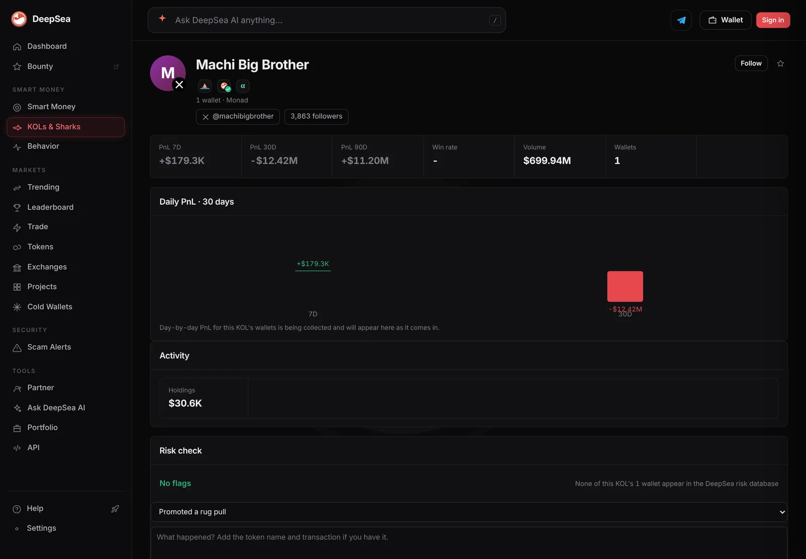
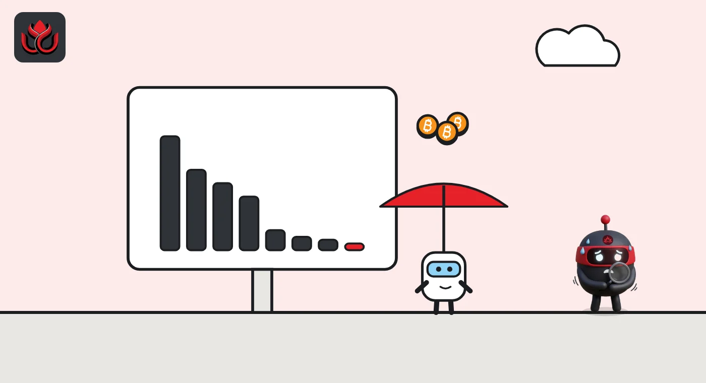

177 crypto influencers made money in 30 days. Four others lost $19.8 million
DeepSea's 30-day KOL leaderboard looks like a winning month: 177 of 202 accounts are up. Then you reach the bottom, where Machi Big Brother alone shows minus $12.42 million.
Key points
- DeepSea's 30-day KOL board lists 202 accounts: 177 in profit, 25 in loss.
- Winners made about $21.8 million and losers lost about $19.9 million, a net of only about $1.8 million.
- Four accounts make up almost all the losses: Machi Big Brother (minus $12.42 million), mk4 (minus $3.29 million), Bharat Krymo (minus $2.94 million) and wanyekest (minus $1.11 million).
 What DeepSea's data shows
What DeepSea's data shows
DeepSea's KOLs & Sharks leaderboard ranks the wallets of crypto influencers (KOLs) by profit and loss (PnL). LC Insight opened the full 30-day view at 12:41 a.m. ET on November 5, 2026. It lists 202 accounts: 177 up and 25 down.
We added up every row, using the rounded figures DeepSea displays. Winners total about $21.8 million. Losers total about minus $19.9 million. The net for the whole board is roughly +$1.8 million.
This leaderboard is a different table from the 30-day realized PnL feed LC Insight covered on November 4, so the totals do not match.

Data: DeepSea (desea.io), checked November 5, 2026, 12:41 a.m. ET.
The top of the board
First place belongs to 2 freres 2 fauves on Hyperliquid at +$10.73 million, about 49% of all gains on the board. Next come slingoor (+$2.56 million), Frank (+$509,700), throatycrab1008 (+$444,600) and zeropnl (+$378,700).
Most winners made far less. The 100th account on the board is up $12,900.
The bottom of the board
The losses are packed into a few names. Machi Big Brother is last at minus $12.42 million, with $699.94 million of volume on its DeepSea page. Above it sit mk4 (minus $3.29 million), Bharat Krymo (minus $2.94 million) and wanyekest (minus $1.11 million).
Those four add up to about $19.8 million, or 99% of all losses. The other 21 losing accounts lost $42,600 or less each.
Biggest 30-day KOL winners and losers on DeepSea
US$ million
Source: DeepSea KOL leaderboard, 30D, read November 5, 2026, 12:41 a.m. ET.

A month is not a week
The 7-day view tells a different story. On the 7-day board, Machi Big Brother is up $179,300, and its 90-day figure is +$11.20 million. mk4 is the 7-day board's worst account at minus $2.84 million, yet up $15.72 million over 90 days.
The same wallet can look like a star or a disaster, depending on the window.
How to read a KOL board
PnL on this board is DeepSea's estimate of each account's profit or loss over the window. A KOL can have more than one wallet, and some trade mostly futures, where a few large positions decide the month.
The board shows results, not what each KOL posted. A follower who spots a name near the top sees it after the gains are made.
LC Insight analysis
This section is our reading of the facts above, not a statement of fact.
- We think "most KOLs made money" is true but misleading. With 177 winners and a net of only about $1.8 million, a few big losers canceled almost all the gains.
- Big swings come from big accounts. The largest losses and gain sit with high-volume traders, so a small follower copying them takes the same risk with less cushion.
What's next
- Whether Machi Big Brother climbs back toward zero on the 30-day board
- Whether 2 freres 2 fauves keeps half of all KOL gains
- How many of the 25 losers turn positive in the next 30 days
Disclaimer. This article is based on public information and the sources listed below as of the update time shown. It is for information only and is not investment, legal or tax advice. Figures may change as companies and authorities publish new data.
Sources
- DeepSea, KOLs & Sharks leaderboard, 30D view, all 202 rows (read November 5, 2026, 12:41 a.m. ET)
- DeepSea, KOLs & Sharks leaderboard, 7D view (read November 5, 2026, 12:45 a.m. ET)
- DeepSea, KOL page Machi Big Brother: PnL 7D/30D/90D and volume (read November 5, 2026, 12:50 a.m. ET)
- DeepSea, KOL page mk4: PnL 90D (read November 5, 2026, 12:46 a.m. ET)